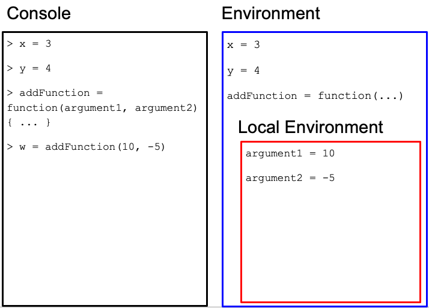
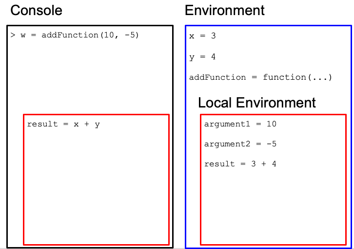

Chapter 4 Data Wrangling with Tidy Data, Part 1
Today, we will understand deeply how functions work, and continue learning more functions on dataframes.
4.1 Functions deep dive

Function machine from algebra class.
We write functions for two main, often overlapping, reasons:
Following DRY (Don’t Repeat Yourself) principle: If you find yourself repeating similar patterns of code, you should write a function that executes that pattern. This saves time and the risk of mistakes.
Create modular structure and abstraction: Having all of your code in one place becomes increasingly complicated as your program grows. Think of the function as a mini-program that can perform without the rest of the program. Organizing your code by functions gives modular structure, as well as abstraction: you only need to know the function name, inputs, and output to use it and don’t have to worry how it works.
Some advice on writing functions:
Code that has a well-defined set of inputs and outputs make a good function.
A function should do only one, well-defined task.
4.1.1 Anatomy of a function definition
Recall that a function has a function name, input arguments, and a return value.
Function definition consists of assigning a function name with a “function” statement that has a comma-separated list of named function arguments, and a return expression. The function name is stored as a variable in the global environment.
In order to use the function, one defines or import it, then one calls it.
Example:
addFunction = function(argument1, argument2) {
result = argument1 + argument2
return(result)
}
z = addFunction(3, 4)With function definitions, not all code runs from top to bottom. The first four lines defines the function, but the function is never run. It is called on line 5, and the lines within the function are executed.
When the function is called in line 5, the variables for the arguments are reassigned to function arguments to be used within the function and helps with the modular form. We need to introduce the concept of local and global environments to distinguish variables used only for a function from variables used for the entire program.
Some syntax equivalents on calling the function:
addFunction(3, 4)
addFunction(argument1 = 3, argument2 = 4)
addFunction(argument2 = 4, argument1 = 3)but this could be different:
addFunction(4, 3)4.1.2 Local and global environments
{ } represents variable scoping: within each { }, if variables are defined, they are stored in a local environment, and is only accessible within { }. All function arguments are stored in the local environment. The overall environment of the program is called the global environment and can be also accessed within { }.
The reason of having some of this “privacy” in the local environment is to make functions modular - they are independent little tools that should not interact with the rest of the global environment. Imagine someone writing a tool that they want to give someone else to use, but the tool depends on your environment, vice versa.
4.1.3 A step-by-step example
Using the addFunction function, let’s see step-by-step how the R interpreter understands our code:

We define the function in the global environment.
We call the function, and the function arguments 3, 4 are assigned to argument1 and argument2, respectively in the function’s local environment.
We run the first line of code in the function body. The new variable “result” is stored in the local environment because it is within { }.
We run the second line of code in the function body to return a value.
The return value from the function is assigned to the variable z in the global environment. All local variables for the function are erased now that the function call is over.
4.1.4 Function arguments create modularity
First time writers of functions might ask: why are variables we use for the arguments of a function reassigned for function arguments in the local environment? Here is an example when that process is skipped - what are the consequences?
x = 3
y = 4
addFunction = function(argument1, argument2) {
result = x + y
return(result)
}
z = addFunction(x, y)
w = addFunction(10, -5)What do you expect the value of z to be? How about w?
Here is the execution for w:

We define the variables and function in the global environment.
 

We run the second line of code in the function body to return a value.

The return value from the function is assigned to the variable w in the global environment. All local variables for the function are erased now that the function call is over.
The function did not work as expected because we used hard-coded variables from the global environment and not function argument variables unique to the function use!
4.1.5 Exercises
Create a function, called
add_and_raise_powerin which the function takes in 3 numeric arguments. The function computes the following: the first two arguments are added together and raised to a power determined by the 3rd argument. The function returns the resulting value. Here is a use case:add_and_raise_power(1, 2, 3) = 9because the function will return this expression:(1 + 2) ^ 3. Another use case:add_and_raise_power(3, 1, 2) = 16because of the expression(3 + 1) ^ 2. Confirm with that these use cases work.Create a function, called
my_dimin which the function takes in one argument: a dataframe. The function returns the following: a length-2 numeric vector in which the first element is the number of rows in the dataframe, and the second element is the number of columns in the dataframe. Your result should be identical as thedimfunction. How can you leverage existing functions such asnrowandncol? Use case:my_dim(metadata) = c(1864, 30)Create a function, called
medicaid_eligiblein which the function takes in one argument: a numeric vector calledage. The function returns a numeric vector with the same length asage, in which elements are0for indicies that are less than 65 inage, and1for indicies 65 or higher inage. Use cases:medicaid_eligible(c(30, 70)) = c(0, 1)
4.2 Pipes
Sometimes, in data analysis, we want to transform our dataframe in multiple steps via different functions. In your exercise, you started combining filter() and select() using one line of code:
library(tidyverse)
metadata = read.csv("https://github.com/fhdsl/Intro_to_R/raw/main/classroom_data/CCLE_metadata.csv")breast_metadata = select(filter(metadata, OncotreeLineage == "Breast"), ModelID, Age, Sex)This is a bit hard to read. A computer doesn’t care how difficult it is to read this line of code, but there is a lot of instructions going on in one line of code. This multi-step function composition will lead to an unreadable pattern such as:
result = function3(function2(function1(dataframe, df_col4, df_col2), arg2), df_col5, arg1)To untangle this, you have to look into the middle of this code, and slowly step out of it.
To make this more readable, programmers came up with an alternative syntax for function composition via the pipe metaphor. The ideas is that we push data through a chain of connected pipes, in which the output of a pipe becomes the input of the subsequent pipe.
Instead of a syntax like result2 = function3(function2(function1(dataframe))),
we linearize it with the %>% symbol: result2 = dataframe %>% function1 %>% function2 %>% function3.
In the previous example,
result = dataframe %>% function1(df_col4, df_col2) %>%
function2(arg2) %>%
function3(df_col5, arg1)Looks much easier to read. Notice that we have broken up one expression in to three lines of code for readability. If a line of code is incomplete (the first line of code is piping to somewhere unfinished), the R will treat the next line of code as part of the current line of code.
4.2.1 Exercises
- Rewrite the
select()andfilter()function composition example above using the pipe metaphor and syntax.
4.3 Modifying and creating new columns in dataframes
To put together what we have learned today, we will modify and create new columns in dataframes.
The mutate() function takes in the following arguments: the first argument is the dataframe of interest, and the second argument is a new or existing data variable that is defined in terms of other data variables.
We create a new column newAge that is 10 years older than the original Age column.
metadata$Age[1:10]## [1] 60 36 72 30 30 64 63 56 72 53metadata2 = mutate(metadata, newAge = Age + 10)
metadata2$newAge[1:10]## [1] 70 46 82 40 40 74 73 66 82 63or medicaid_eligible():
medicaid_eligible = function(age) {
age[age < 65] = 0
age[age >= 65] = 1
return(age)
}
metadata$Age[1:10]## [1] 60 36 72 30 30 64 63 56 72 53metadata2 = mutate(metadata, medicaid = medicaid_eligible(Age))
metadata2$medicaid[1:10]## [1] 0 0 1 0 0 0 0 0 1 0table(metadata2$medicaid)##
## 0 1
## 1148 3484.3.1 All together now
Let’s put all of our analysis together via pipes:
breast_metadata = metadata %>% filter(OncotreeLineage == "Breast") %>%
select(ModelID, Age, Sex) %>%
mutate(medicaid = medicaid_eligible(Age))
head(breast_metadata)## ModelID Age Sex medicaid
## 1 ACH-000017 43 Female 0
## 2 ACH-000019 69 Female 1
## 3 ACH-000028 69 Female 1
## 4 ACH-000044 47 Female 0
## 5 ACH-000097 63 Female 0
## 6 ACH-000111 41 Female 04.3.2 Alternative: Creating and modifying columns via $
Instead of mutate() function, we can also create a new or modify a column via the $ symbol:
metadata$medicaid = medicaid_eligible(metadata$Age)